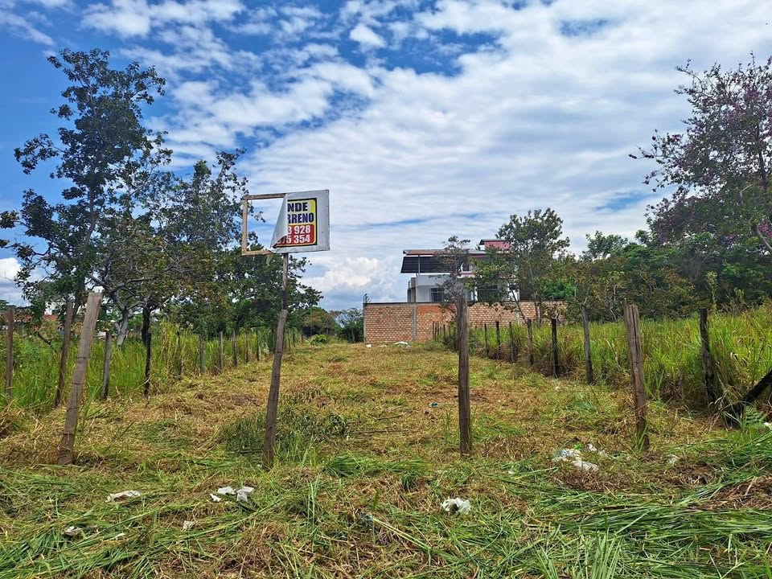

PEN200,000 350 m²

Se vende un lote de terreno, ubicado en las Lomas de San pedro, inscrito en Registros Públicos. Zona tranquila y fresca. Con documentos en Regla. Medidas 10x35. Escribir al [hidden information]
Abrir en CompraTerrenos.pe →